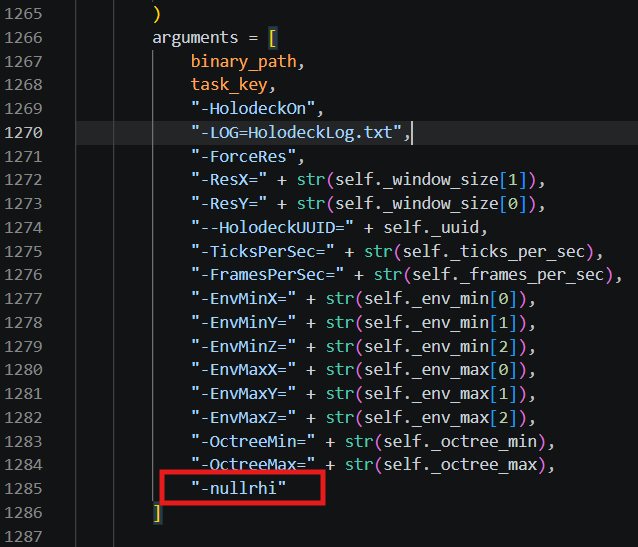

跑通HoloOcean2的ROS2示例方法（无头模式）
1. 安装 ROS 2 Jazzy
在WSL终端中输入一下指令
sudo apt update && sudo apt install curl -y
sudo curl -sSL https://raw.githubusercontent.com/ros/rosdistro/master/ros.key -o /usr/share/keyrings/ros-archive-keyring.gpg
echo "deb [arch=$(dpkg --print-architecture) signed-by=/usr/share/keyrings/ros-archive-keyring.gpg] http://packages.ros.org/ros2/ubuntu $(. /etc/os-release && echo $UBUNTU_CODENAME) main" | sudo tee /etc/apt/sources.list.d/ros2.list > /dev/null
sudo apt update
sudo apt install ros-jazzy-desktop -y
echo "source /opt/ros/jazzy/setup.bash" >> ~/.bashrc
source ~/.bashrc
2. 安装 HoloOcean Python 客户端库
sudo pip install -e /mnt/e/underwater/daima2/holoocean/client --break-system-packages
3. 下载世界包（Ocean）
网盘的下载链接：https://openhutb.github.io/mujoco_plugin/underwater/usage/installation/
4. 编译 holoocean-ros 桥接包
sudo apt install python3-colcon-common-extensions -y
cd /mnt/e/underwater/daima2/holoocean-ros
colcon build
source install/setup.bash
5. 添加 -nullrhi 参数
holoocean/client/src/holoocean/environments.py文件中在 __linux_start_process__ 方法的 arguments 列表末尾添加：
"-nullrhi",

6. 运行 ROS 2 示例（WSL 无头模式）
1. 清理残留
rm -f /dev/shm/sem.HOLODECK_LOADING_SEM*
pkill -9 Holodeck
pkill -9 holoocean_node
2. 进入工作空间并激活环境
cd 到holoocean-ros文件夹
source install/setup.bash
export HOLODECKPATH=指向世界包文件夹地址
7. 运行示例
ros2 launch /mnt/e/underwater/daima2/holoocean-ros/install/holoocean_examples/share/holoocean_examples/launch/command_launch.py headless:=true